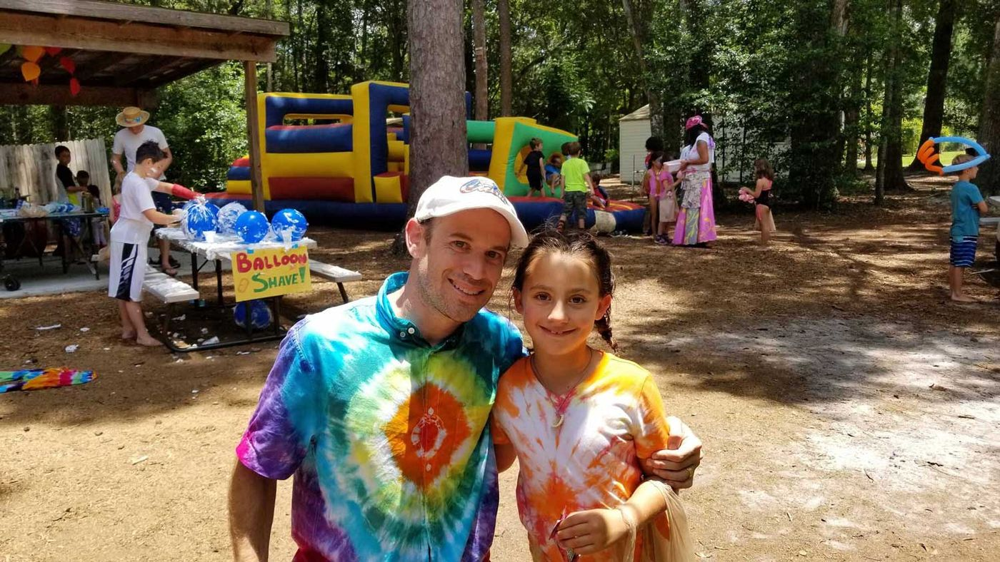
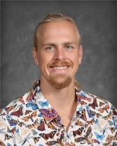
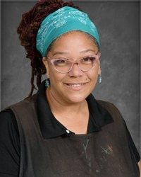

Jeff Davis
Director
5th–8th grade teacher
About
Jordan Glen’s philosophy starts from a simple observation: children share predictable sequences of growth, and each child still has an individual pattern of timing.
The school’s commitment is to a program that values individual differences, exploration and discovery, meaningful academic study, sportsmanship, and personal and global responsibility.
Staff are described as the way the school understands each child’s creative, social, emotional, and intellectual needs. Jordan Glen wants children to enjoy their time away from home, and says the joy of living and the love of learning need never be separated.
The FAQ puts the same idea this way: every child is gifted, academics are meaningful and guided by the natural environment, and the joy of living and love of learning stay together.
The school also points readers to a 2025 article about Jordan Glen on Next Steps Blog.

The atmosphere is informal and respectful. Morning Meeting at 9:00 a.m. is where students and teachers share the day’s activities, announcements, and news. Participation, group problem-solving, and cooperation are encouraged.
The faculty page says academic achievement is watched through formal and informal inventories and testing, and that students who transfer out enter at or above grade level. Many alumni continue in Cambridge and International Baccalaureate programs.
Some teachers were Jordan Glen students themselves and now have their own children at the school.
Faculty & staff
Names and roles are taken from the public team page. Five people are listed there without a photo.
Director
5th–8th grade teacher
Associate Director
5th–8th grade teacher
Associate Director
5th–8th grade teacher
3rd–4th grade teacher
3rd–4th grade teacher aide
2nd grade teacher
2nd grade teacher
1st grade teacher
1st grade teacher aide
Kindergarten teacher
Kindergarten teacher
PreK teacher
PreK teacher

Science teacher

Art teacher
Spanish teacher
Administration
Afterschool teacher
Music teacher
These quotes are published on jordanglen.org. They are not new testimonials.
“My children have attended Jordan Glen since Pre-K. They are now in the 6th and 8th grade. I feel blessed that they have never been bullied, and have always been excited to go to school. I think the outside setting and frequent outdoor activities are good for their bodies and souls.”
“I am an alum who appreciated my experience at Jordan Glen so much that I did everything I could to be able to send my own children there. This school is a gem and I wish every child was lucky enough to attend and experience the MAGIC that is Jordan Glen.”
“The way I sum Jordan Glen up is with the following example. There is an orange tree outside of the school. When all the oranges were ripe, the children picked and ate them. As the lower oranges disappeared, the bigger kids helped the smaller kids get the higher ones. When the higher ones disappeared, the biggest kid got a ladder and got the very highest ones down and shared them with the other kids. It operates as a family. …”
“Jordan Glen’s impact on the lives of my children is immeasurable. The nurturing, creative, and highly skilled teachers made all the difference!”
For over 45 years, Jordan Glen has celebrated, inspired, and empowered young minds. The alumni page invites graduates to register, check in, and support the nonprofit. Donations are tax-deductible.
To schedule a tour, call (352) 495-2728 or send a message through the school’s information form. Applications and camp registration use the forms already on jordanglen.org.